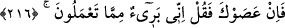
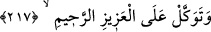
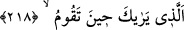

216. Şâyet sana karşı gelirlerse de ki: Ben sizin yaptıklarınızdan muhakkak ki
uzağım.
Keşfü’l-esrâr’da der ki: “Allah Rasûlü’nün yakınları ve akrabaları kendisine düşman
olup kötü söz söylemeye başlayınca bu âyet nâzil oldu.”
“Şâyet sana karşı gelirlerse” yâni aşîretin sana asî olur, itâattan çıkar, sana
muhalefet eder ve tâbi olmazlarsa “de ki: “Ben sizin yaptıklarınızdan” Allah
Teâlâ’dan başkasına ibadet etmenizden “muhakkak ki uzağım.” Kendilerinden ise
ayrılıp uzaklaşma. Onlara nasihat ve öğüt vererek güzel söz söyle. Belki sana itaate ve
davetine icabete dönerler.
Fakir (Bursevî) der ki: Şeyhim ve senedimin (Allah ruhunu rahat ettirsin) ağzından
şöyle derken işittim: “Kendim ile halîfelerim arasında tavsiye dışında bağı kestim.
Çünkü Allah Teâlâ: “birbirlerine hakkı tavsiye edenler ve sabrı tavsiye edenler…”
(el-Asr, 103/3) buyuruyor. Bana herkese özellikle onlara hakkı ve sabrı tavsiye etmek
düşer.”
217. Sen O mutlak galip ve engin merhamet sahibine güvenip dayan.
“Sen O mutlak galip” dostunu asla zelil kılmayan, kendisine düşmanlık edene asla
izzet vermeyen/üstün kılmayan, düşmanlarını kahretmeye muktedir olan “ve engin
merhamet sahibine” kendisine tevekkül eden ve işini kendisine havale edeni, zafer ve
yardımıyla merhamet edene “güvenip dayan.” Bütün hallerinde O’na tevekkül et. O
dostlarına yardım eder. O halde O’ndan başkasına tevekkül etme. Çünkü düşmanların
şerrini uzaklaştırma konusunda başkası değil, ancak O kâfîdir.
Bütün işlerde Allah’a tevekkül ve O’ndan başkasından yüz çevirmek, ancak
kâmillerin özelliklerindendir. Allah bizi ve sizi onlara katılan kullarından kılsın.
Sonra Allah bu âyetin ardından şu âyeti getirdi:
218. O ki, (gece namaza) kalktığın zaman seni görüyor.
Çünkü Allah’ın görmesi bu rahmetin sebebi gibidir. Yâni seni görene tevekkül et,
demektir.
“O ki,” gecenin ortasında teheccüd namazına “kalktığın zaman seni görüyor.”